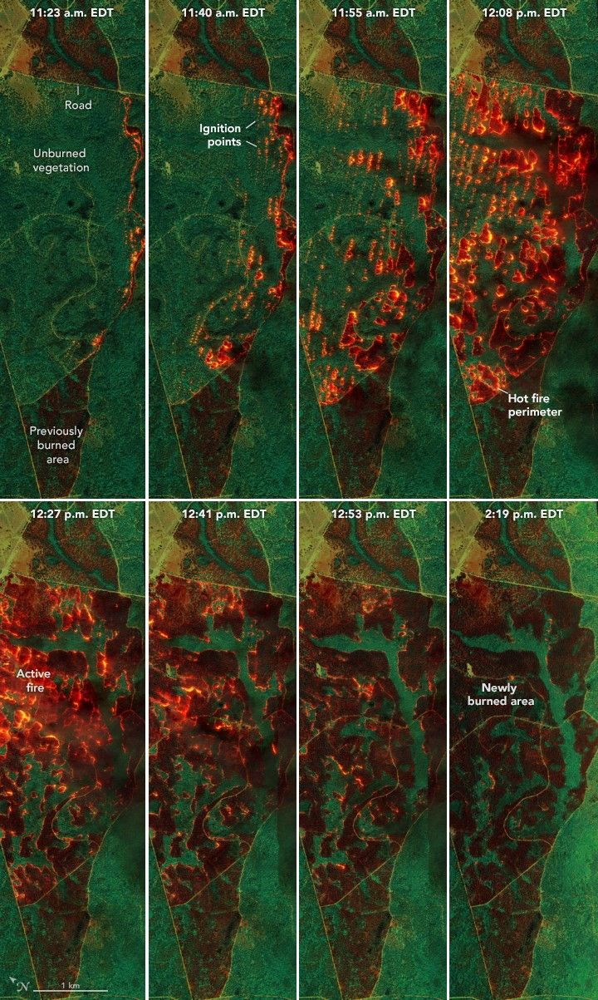

Mapping Fire’s Spread in a Georgia Pine Burn
On April 14, 2025, flames ate through brush and stands of longleaf pine trees on Fort Stewart-Hunter Army Airfield in southeast Georgia, burning a total of 1,885 acres. Prescribed burns, conducted by the U.S. Department of Defense (DoD), are a routine part of the army base’s land management. However, this event unfolded as teams with NASA’s FireSense and seven DoD-funded fire research projects collected airborne, spaceborne, and ground data before, during, and after the fire, revealing intricate patterns in its progression.
The airborne observations provide more than just striking images; they are helping researchers from the U.S. Forest Service, academia, and private industry test new instruments and technology. They are also being used in combination with satellite and ground-based data to improve fire models and evaluate if the fire behaved as expected—information intended to aid future prescribed fire strategies.
NASA’s AVIRIS-3 (Airborne Visible Infrared Imaging Spectrometer 3), mounted on a NASA-contracted Dynamic Aviation B200 King Air research plane, was among several airborne sensors collecting data that day. The instrument measures sunlight reflected off the ground, as well as the energy emitted from the surface, such as the light and heat from fire. The image series acquired over the course of the burn combines three infrared wavelengths (2,350, 1,200, and 1,000 nanometers) to cut through smoke and identify the relative intensity of burning.
The sequence begins (top left) at 11:23 a.m. local time (15:23 UTC), around the start of the burn. The remaining images show AVIRIS data collected over the next three hours during additional passes. Notice the brown areas at the top and bottom of each scene—these are previously burned areas, which can help contain the fire within designated boundaries. Roads, appearing as thin, straight lines, serve a similar purpose.
The aircraft followed a helicopter that dropped incendiary “ping pong balls”—small ignition devices—in a carefully coordinated pattern. Each pass captures the fire’s progression, from point-source ignitions to the spreading and merging of flaming fronts. Orange and red indicate cooler-burning areas; yellow marks the hottest zones; bright green patches are unburned vegetation.
The final scene shows active flaming has concluded. Hotspots and smoldering areas likely persist, though they are not obvious in this image; another AVIRIS-3 band (2,400 nanometers) better observes those phenomena. Several strips of vegetation remain unburned, primarily in low-lying, soggy terrain with high fuel moisture, making it less likely to burn.
Prescribed burns reduce hazardous fuels, promote ecosystem health, and maintain habitats. In the U.S. Southeast, these include longleaf pine forests that support species such as red-cockaded woodpeckers, wild turkeys, and gopher tortoises. At Fort Stewart, ecosystem health and habitat maintenance occur alongside the primary motivation of reducing fuels to support training operations and military readiness.
The DoD Strategic Environmental Research and Development Program (SERDP) partnered with NASA’s FireSense campaign to provide fire behavior and vegetation data necessary to validate observations from airborne and spaceborne sensors. Data collected at Fort Stewart and from other fires are analyzed after the burns are complete, though some airborne observations have aided fire management decisions in real time. In March 2025, for example, AVIRIS-3 flights supported operations at wildland fires in several southeastern U.S. states and a prescribed burn in Geneva State Forest in Alabama.
Jacquelyn Shuman, forest ecologist at NASA’s Ames Research Center and project scientist for FireSense, described AVIRIS as a comprehensive toolkit. “AVIRIS collects information on the ground prior to a fire and in real-time during a fire, providing valuable information to those on the ground,” she said. “At Fort Stewart, we’re looking at how the data can inform models and update our planning. Did the fire behave as we expected it to?”
Researchers like Ryan Wade, research meteorologist at the University of Alabama in Huntsville and NASA’s Marshall Space Flight Center, are investigating. Preliminary analyses suggest that fuel moisture, ignition patterns, and weather conditions affected the fire as expected. Also, the fast ignition time of this burn appears to have produced a fire intense enough to modify the local weather environment. “Weather plays a huge role in impacting fire,” Wade said, “but intense fires can also feedback to impact weather.”